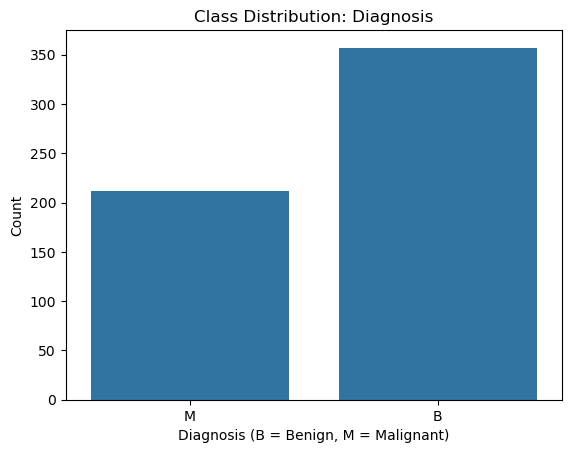
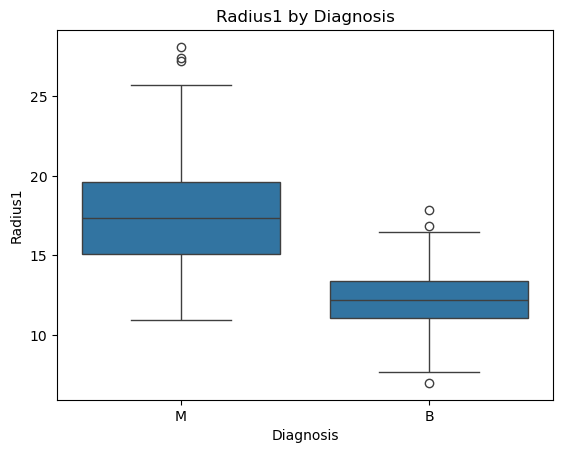
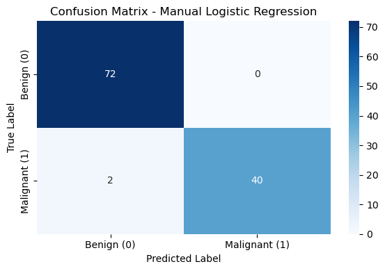
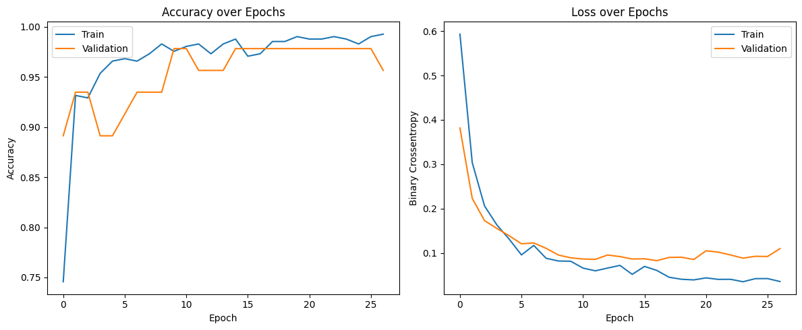
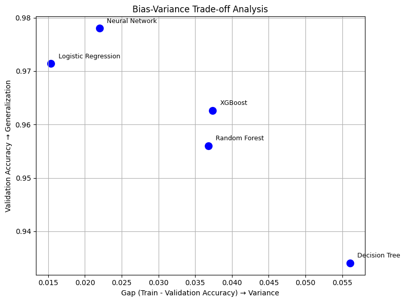
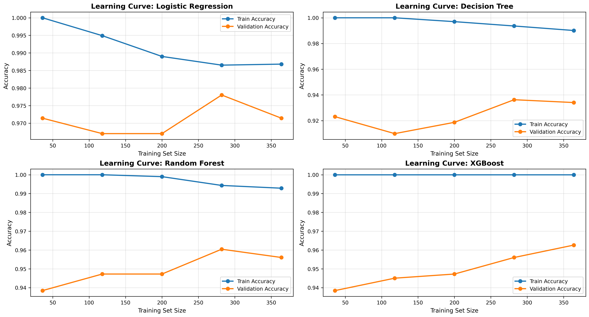

Healthcare ML • Classification
Breast Cancer Classification & Model Evaluation
Comparing supervised machine learning models for benign-versus-malignant classification using screening-derived tumor features.
This project evaluates multiple classification models on breast cancer screening data, with emphasis on malignant-case recall, model generalization, training behavior, and responsible interpretation of healthcare machine learning results.
Project Overview
This project explores breast cancer classification as a healthcare machine learning case study. The goal is to compare how different supervised models classify benign and malignant records, while paying close attention to recall, generalization, and responsible interpretation.
Dataset and Preprocessing
The dataset contains 569 labeled records with 30 numeric screening-derived features after removing the ID column. The target variable is encoded into benign and malignant classes, and models are trained and evaluated using a stratified train-test split.


Preprocessing Note
The preprocessing workflow splits the data before scaling, then fits the StandardScaler only on the training set. The fitted scaler is used to transform both the training and test sets, avoiding preprocessing leakage and making model evaluation more reliable.
Modeling Approach
The project compares interpretable, tree-based, boosted, and neural network classifiers. This provides a broader view of model behavior than relying on a single accuracy score.
Manual Logistic Regression
Implemented a logistic regression workflow to understand the mechanics of binary classification, cost reduction, and gradient-based learning.
Tree and Ensemble Models
Compared decision tree, random forest, and XGBoost classifiers to evaluate nonlinear decision boundaries and ensemble performance.
Neural Network Classifier
Trained a neural network and monitored accuracy and loss curves to assess training stability and validation behavior.
Model Performance
Logistic Regression and the Neural Network produced the strongest holdout-test results, with matching accuracy and malignant-case recall. Because this is a healthcare classification task, malignant-case recall is especially important: missed malignant cases are more consequential than many ordinary classification errors.
| Model | Accuracy | Malignant Recall | Portfolio takeaway |
|---|---|---|---|
| Neural Network | 98.25% | 95.24% | High-performing model with strong recall and the highest cross-validation validation accuracy. |
| Manual Logistic Regression | 98.25% | 95.24% | Interpretable, stable baseline with top-tier overall accuracy and recall. |
| Random Forest | 97.37% | 92.86% | Strong ensemble baseline with slightly lower malignant recall. |
| XGBoost | 97.37% | 92.86% | Competitive boosted-tree model with strong but not best recall. |
| Decision Tree | 95.61% | 88.10% | Useful comparison model, but weaker generalization and recall. |


Generalization and Bias-Variance Analysis
Beyond test accuracy, the notebook compares model generalization behavior using validation accuracy, bias-variance patterns, and learning curves. This helps explain not only which model performed well, but also whether performance appears stable.

Interpretation
The strongest models combine high accuracy with stronger malignant-case recall and better validation behavior. The decision tree performs reasonably, but its weaker recall and larger train-validation gap make it less attractive than logistic regression or the neural network.

Role and Implementation
I implemented the full machine learning workflow, including data preparation, manual logistic regression, model comparison, neural network training, evaluation visuals, and interpretation of classification performance.
Classification Workflow
Prepared the feature matrix and diagnosis labels, trained multiple supervised models, and compared predictive performance across model families.
Manual Model Implementation
Built a logistic regression workflow to demonstrate the underlying mechanics of binary classification, gradient descent, and cost-function optimization.
Model Evaluation
Used confusion matrices, classification reports, validation curves, learning curves, and bias-variance analysis to compare model behavior.
Tools
Python • NumPy • Pandas • Matplotlib • Scikit-learn • TensorFlow/Keras • XGBoost • Jupyter Notebook
Artifacts
The project artifacts include the notebook, source repository, visual outputs, and evaluation summaries used to communicate model behavior.
GitHub Repository
Source repository containing the notebook, project code, visual outputs, and documentation.
Open repository →Notebook
Main Jupyter Notebook covering preprocessing, classification models, neural network training, and evaluation.
breast_cancer_detection_ml.ipynbVisual Outputs
Selected visuals for dataset balance, feature separation, model performance, training behavior, and generalization analysis.
images/projects/breast-cancer/